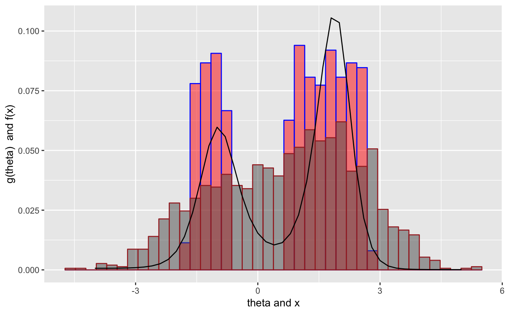

A function to compute Empirical Bayes estimates using deconvolution
deconv( tau, X, y, Q, P, n = 40, family = c("Poisson", "Normal", "Binomial"), ignoreZero = TRUE, deltaAt = NULL, c0 = 1, scale = TRUE, pDegree = 5, aStart = 1, ... )
| tau | a vector of (implicitly m) discrete support points for \(\theta\). For the Poisson and normal families, \(\theta\) is the mean parameter and for the binomial, it is the probability of success. |
|---|---|
| X | the vector of sample values: a vector of counts for Poisson, a vector of z-scores for Normal, a 2-d matrix with rows consisting of pairs, (trial size \(n_i\), number of successes \(X_i\)) for Binomial. See details below |
| y | the multinomial counts. See details below |
| Q | the Q matrix, implies y and P are supplied as well; see details below |
| P | the P matrix, implies Q and y are supplied as well; see details below |
| n | the number of support points for X. Applies only to
Poisson and Normal. In the former, implies that support of X is
1 to n or 0 to n-1 depending on the |
| family | the exponential family, one of |
| ignoreZero | if the zero values should be ignored (default =
|
| deltaAt | the theta value where a delta function is desired
(default |
| c0 | the regularization parameter (default 1) |
| scale | if the Q matrix should be scaled so that the spline
basis has mean 0 and columns sum of squares to be one, (default
|
| pDegree | the degree of the splines to use (default 5). In notation used in the references below, \(p\) = pDegree + 1 |
| aStart | the starting values for the non-linear optimization, default is a vector of 1s |
| ... | further args to function |
a list of 9 items consisting of
the maximum likelihood estimate \(\hat{\alpha}\)
the m by p matrix Q
the n by m matrix P
the ratio of artificial to genuine information per the reference below, where it was referred to as \(R(\alpha)\)
the covariance matrix for the mle
the covariance matrix for the \(g\)
an m by 6 or 7 matrix
containing columns for \(theta\), \(g\), \(\tilde{g}\)
which is \(g\) with thinning correction applied and named
tg, std. error of \(g\), \(G\) (the cdf of g),
std. error of \(G\), and the bias of \(g\)
the negative log-likelihood function for the data taking a \(p\)-vector argument
a function to compute the statistics returned above
The data X is always required with two exceptions. In the Poisson case,
y alone may be specified and X omitted, in which case the sample space of
the observations $\(X\)$ is assumed to be 1, 2, .., length(y). The second exception is
for experimentation with other exponential families besides the three implemented here:
y, P and Q can be specified together.
Note also that in the Poisson case where there is zero truncation,
the stats matrix has an additional column "tg" which
accounts for the thinning correction induced by the truncation. See
vignette for details.
Bradley Efron. Empirical Bayes Deconvolution Estimates. Biometrika 103(1), 1-20, ISSN 0006-3444. doi:10.1093/biomet/asv068. http://biomet.oxfordjournals.org/content/103/1/1.full.pdf+html
Bradley Efron and Trevor Hastie. Computer Age Statistical Inference. Cambridge University Press. ISBN 978-1-1-7-14989-2. Chapter 21.
set.seed(238923) ## for reproducibility N <- 1000 theta <- rchisq(N, df = 10) X <- rpois(n = N, lambda = theta) tau <- seq(1, 32) result <- deconv(tau = tau, X = X, ignoreZero = FALSE) print(result$stats)#> theta g SE.g G SE.G Bias.g #> [1,] 1 0.0051481615 0.0016525341 0.005148161 1.652534e-03 8.541487e-04 #> [2,] 2 0.0098958954 0.0023381444 0.015044057 3.986483e-03 1.099087e-03 #> [3,] 3 0.0185198134 0.0029466370 0.033563870 6.895555e-03 1.102607e-03 #> [4,] 4 0.0328530174 0.0032249075 0.066416888 9.873512e-03 4.812427e-04 #> [5,] 5 0.0537835715 0.0036693678 0.120200459 1.224156e-02 -1.090720e-03 #> [6,] 6 0.0791112606 0.0056206577 0.199311720 1.425433e-02 -3.316963e-03 #> [7,] 7 0.1017934505 0.0077509950 0.301105170 1.743623e-02 -4.781816e-03 #> [8,] 8 0.1121459629 0.0073194510 0.413251133 2.110274e-02 -3.712078e-03 #> [9,] 9 0.1076955317 0.0051046274 0.520946665 2.259374e-02 -5.759912e-04 #> [10,] 10 0.0934081064 0.0049730965 0.614354771 2.125191e-02 2.609017e-03 #> [11,] 11 0.0758233573 0.0063169145 0.690178128 1.862765e-02 4.426107e-03 #> [12,] 12 0.0596913949 0.0066510289 0.749869523 1.672495e-02 4.632921e-03 #> [13,] 13 0.0472247251 0.0058223171 0.797094249 1.624772e-02 3.649927e-03 #> [14,] 14 0.0388249870 0.0043740118 0.835919236 1.627164e-02 1.933483e-03 #> [15,] 15 0.0332241328 0.0031665912 0.869143368 1.566917e-02 -3.121847e-05 #> [16,] 16 0.0289251034 0.0030459927 0.898068472 1.404924e-02 -1.798007e-03 #> [17,] 17 0.0250253380 0.0036190550 0.923093810 1.171550e-02 -3.024715e-03 #> [18,] 18 0.0210171384 0.0039132116 0.944110948 9.419157e-03 -3.448033e-03 #> [19,] 19 0.0167363462 0.0035333178 0.960847294 7.853539e-03 -2.991447e-03 #> [20,] 20 0.0123508104 0.0026193414 0.973198105 6.965651e-03 -1.879392e-03 #> [21,] 21 0.0084417110 0.0017508155 0.981639816 6.220128e-03 -6.879592e-04 #> [22,] 22 0.0054981488 0.0012927504 0.987137965 5.413467e-03 1.279342e-04 #> [23,] 23 0.0035175978 0.0010712165 0.990655562 4.617829e-03 5.320583e-04 #> [24,] 24 0.0022788319 0.0008958692 0.992934394 3.919108e-03 6.645066e-04 #> [25,] 25 0.0015410174 0.0007350941 0.994475412 3.340415e-03 6.679252e-04 #> [26,] 26 0.0011212384 0.0006048170 0.995596650 2.858930e-03 6.345106e-04 #> [27,] 27 0.0008930759 0.0005149033 0.996489726 2.434629e-03 6.091289e-04 #> [28,] 28 0.0007695787 0.0004644742 0.997259305 2.029782e-03 6.030704e-04 #> [29,] 29 0.0007062477 0.0004516035 0.997965553 1.611586e-03 6.169472e-04 #> [30,] 30 0.0006794627 0.0004755882 0.998645015 1.150613e-03 6.487035e-04 #> [31,] 31 0.0006745962 0.0005341491 0.999319611 6.204563e-04 6.948837e-04 #> [32,] 32 0.0006803885 0.0006204563 1.000000000 1.706969e-10 7.501296e-04## ## Twin Towers Example ## See Brad Efron: Bayes, Oracle Bayes and Empirical Bayes ## disjointTheta is provided by deconvolveR package theta <- disjointTheta; N <- length(disjointTheta) z <- rnorm(n = N, mean = disjointTheta) tau <- seq(from = -4, to = 5, by = 0.2) result <- deconv(tau = tau, X = z, family = "Normal", pDegree = 6) g <- result$stats[, "g"] if (require("ggplot2")) { ggplot() + geom_histogram(mapping = aes(x = disjointTheta, y = ..count.. / sum(..count..) ), color = "blue", fill = "red", bins = 40, alpha = 0.5) + geom_histogram(mapping = aes(x = z, y = ..count.. / sum(..count..) ), color = "brown", bins = 40, alpha = 0.5) + geom_line(mapping = aes(x = tau, y = g), color = "black") + labs(x = paste(expression(theta), "and x"), y = paste(expression(g(theta)), " and f(x)")) }#>